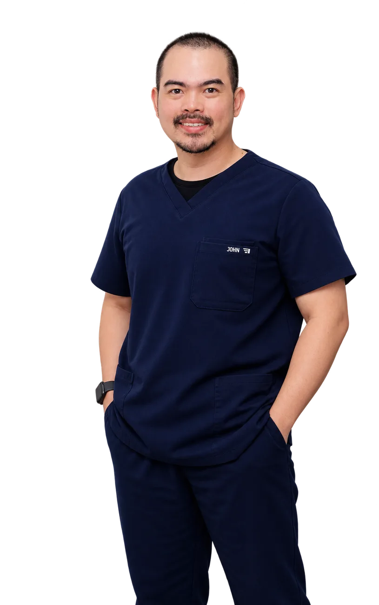

NursePod
Clinical workflow tools
Templates and automations that fit how nurses actually work through a shift.

Registered Nurse · Software Builder
Nurse-built systems that take admin off Australian GPs.

I spent five years as a nurse in GP clinics, buried in paperwork that took time away from patients. The burden is measured — an RACGP analysis of MABEL survey data covering 2,907 Australian GPs found they spend 5.1 hours a week, about 14% of their time, on non-billable admin. With a background in information systems, I started automating the workflows I knew were broken. Other practices wanted the same tools, and ClinicIQ Solutions was the result.
The thesisFive years in GP clinics. A degree in information systems. One question: where is the admin leaking time?
NursePod
Templates and automations that fit how nurses actually work through a shift.
cIQventory
Stock management that knows what a practice really carries and reorders.

PIPQI
Practice Incentives Program work, aligned to current PIP/QI incentive requirements.

MedPlan AI
Care planning support that drafts, and respects the clinical judgement that signs off — decision support for the clinician, not a diagnostic or therapeutic device.
Three habits that make the work stick once a practice adopts it.
The problems I solve are ones I have lived with as a nurse, not ones I read about in a brief.
Every tool is tested against real clinical workflows and current PIP/QI and practice standards before it ships.
Clinicians trust tools from someone who understands their day, their compliance load, and their constraints.
Straight answers about who I am, what ClinicIQ Solutions builds, and who it's for.
John Saenz is a Registered Nurse and software founder based in Wollongong, NSW, Australia. After five years working in Australian general practice clinics, he founded ClinicIQ Solutions in 2025 to build automation tools for GP practices.
ClinicIQ Solutions is an Australian software company that builds automation for general practice. Its tools cover clinical workflows, inventory, PIP/QI incentive tracking, and AI-assisted care planning — designed and tested inside working clinics by a practising nurse (ABN 55 882 511 758).
ClinicIQ Solutions offers four products: NursePod (clinical workflow tools for practice nurses), cIQventory (smart stock and inventory management), PIPQI (Practice Incentives Program calculation and tracking), and MedPlan AI (AI-assisted care planning with clinician sign-off).
PIPQI is a calculator and tracker for the Australian Government's Practice Incentives Program (PIP). It aligns practice data to current PIP/QI incentive requirements so general practices can track and claim incentives with confidence.
According to an RACGP analysis of MABEL survey data covering 2,907 Australian GPs, GPs spend an average of 5.1 hours a week — about 14% of their working time — on non-billable administrative work. ClinicIQ Solutions exists to take that admin off the clinician.
Visit cliniciq.com.au or connect with John Saenz on LinkedIn. John is based in Wollongong, NSW, Australia.
Practice managers, GPs, practice nurses, and partners are all welcome. No hard sell — just a conversation about where the admin is leaking time.